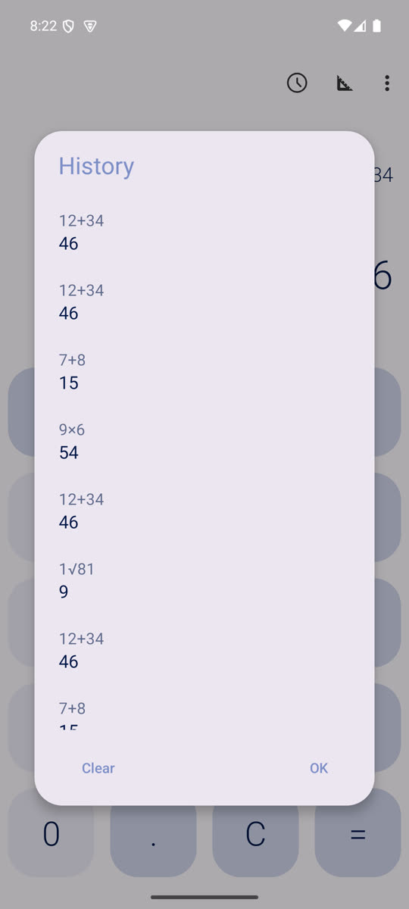
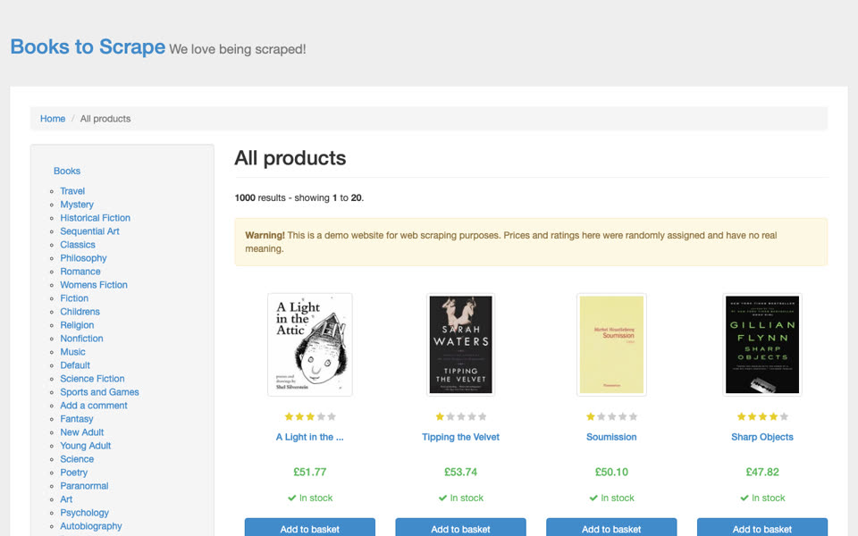
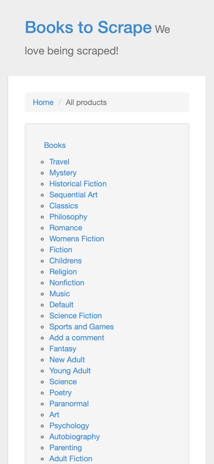

You write the story
Plain English, or a ticket from Jira, Azure DevOps, GitHub or GitLab. Vague criteria get questions back, not tests.
Callahan builds AI agents for engineering teams. They run on your machine, record what they did, and leave the decision to a person.
We build AI agents that do the work and prove it. Quartet QE writes your end-to-end tests from a user story, every rerun replays with no AI, and a person always signs off.
 Quartet QEAgent, testing
Quartet QEAgent, testinginternal/auth.go:23: password hashed with MD5. Use bcrypt or argon2id.
 Callahan CIAgent, CI/CD
Callahan CIAgent, CI/CD CrescendoAgent, performance
CrescendoAgent, performance


{ "orderId": "ORD-1042",
"status": "RESERVED" }| id | status | customer |
|---|---|---|
| ORD-1042 | RESERVED | C-42 |
found: true schemaValid: true
$ ./gradlew test CheckoutReservesStockTest ✓ orderFlowsThroughApiDatabaseAndEvents ✓ orderReducesStockByOrderedQuantity ✓ customerSeesConfirmationInTheWebShop [quartet] Recordings: 8 replayed, 0 handed off, 0 missed | AI: 0 model calls BUILD SUCCESSFUL
rate: 1/4 of P
rate: 1/4 of P
rate: 1/4 of P
rate: 1/4 of P
histograms merged every second one true p99, never an average
Many injectorsCrescendo, distributed$ ./crescendo run DemoCatalogStressSimulation \ --injectors 2 --backend local target demo-catalog: allowlisted ✓ smoke run passed ✓ warm-up, ramp to P step 1.5P, step 2P ... abort: p99 passed the threshold every injector stopped
Guard railsCrescendo, stress testA real browser, with a screenshot at every step.
The same story on iPhone and Android browsers.
Taps, types and checks inside the app itself. No Appium server.
Calls checked against your API descriptions.
Publishes, consumes and checks what arrived.
Postgres and MongoDB, checked after the fact.
Stories from Jira, Azure DevOps, GitHub and GitLab. Reports into Jenkins.
Plain English, or a ticket from Jira, Azure DevOps, GitHub or GitLab. Vague criteria get questions back, not tests.
It reads your contracts and context first, writes the tests, checks them against your principles, and asks for a second opinion.
Commit the tests and recordings/ together. From then on ./gradlew test replays with no AI: fast, free and the same every time.
One review page, with anything that needs you at the top. The agent opens a pull request; it never merges.
/plugin marketplace add Callahan-ci/quartet-qe/plugin install quartet-qe@quartet-qe